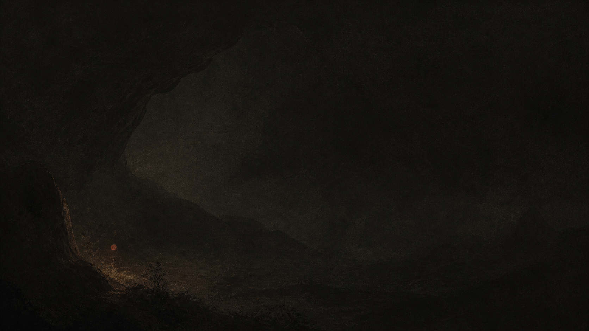
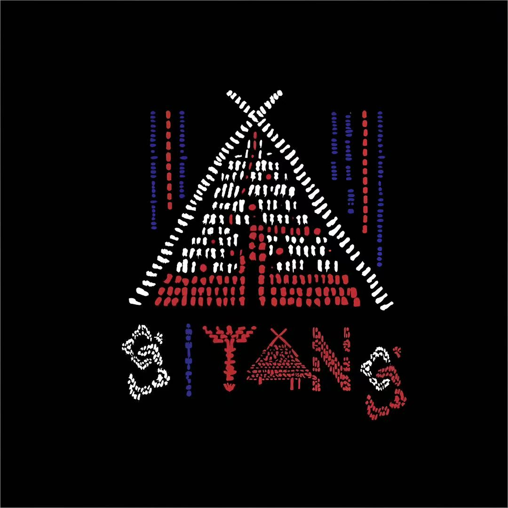
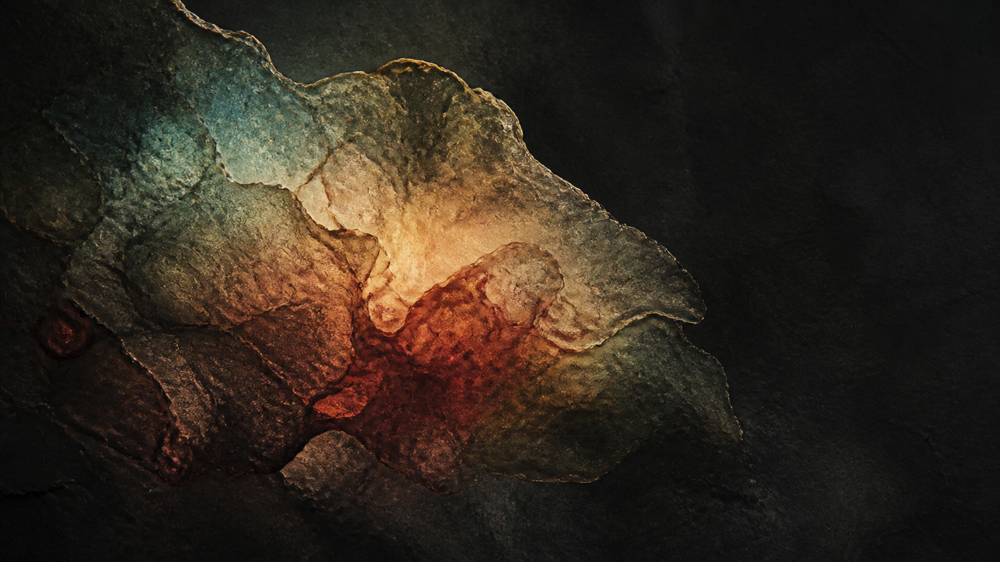
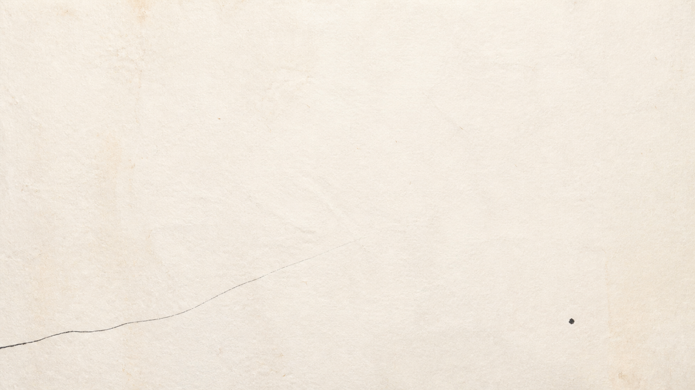
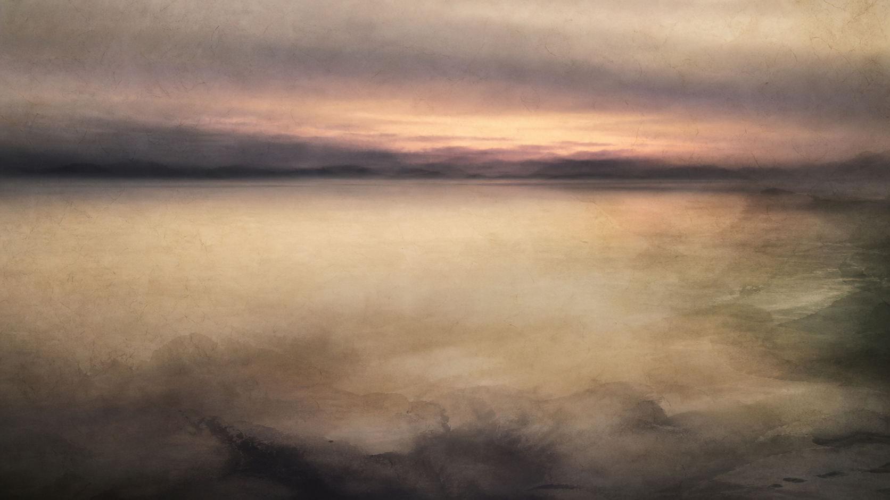
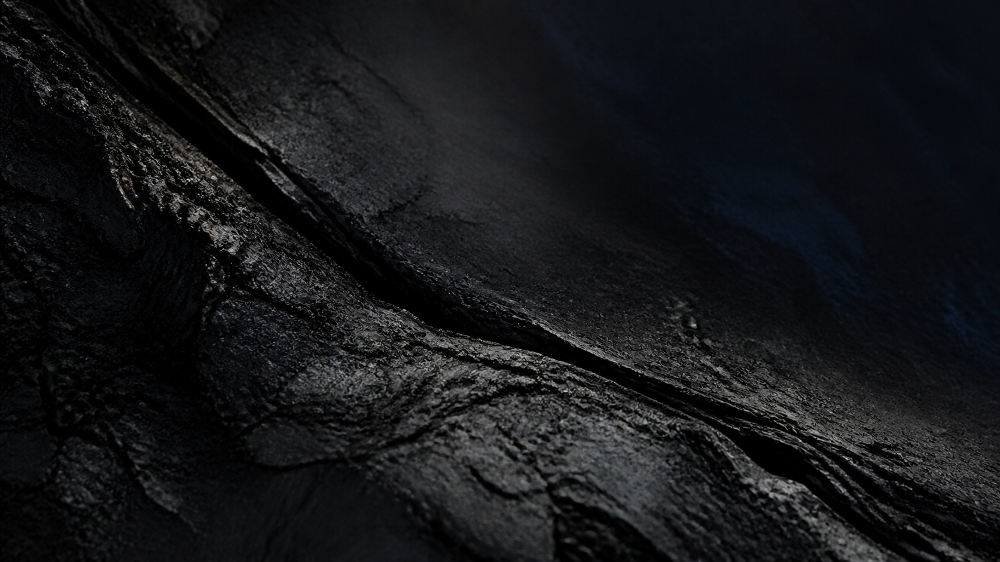
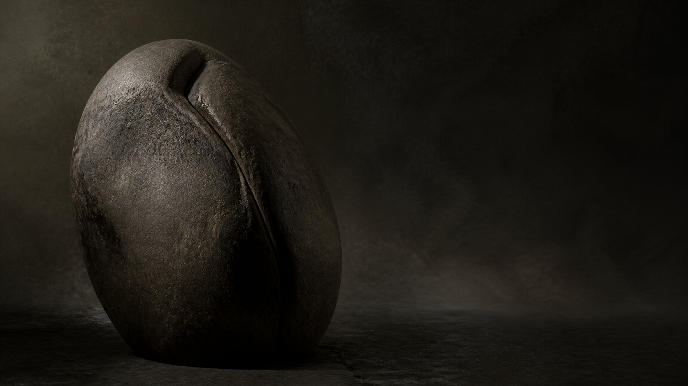

斯棠宇宙
精神飞地
我不管你怎么样，但我希望你按本能去生。

斯棠 · 始于二〇二六
盘踞 · 生根 · 发芽 · 开花
从自然出发，抵达生活。
ABOUT SITANG
斯棠，是一个从自然出发的生活方式品牌。
我们关注人与自然、身体与感受、设计与日常之间细微而真实的连接。以开放的姿态，斯棠持续探索自然疗法、视觉表达与生态产品，让古老的智慧在当下被重新看见，也让美与疗愈更自然地回到生活之中。

精神飞地
我不管你怎么样，但我希望你按本能去生。

唤醒对放松与沉默
接受的原始冲动。
现代社会充满了过度干预与规训。
斯棠的起点，是放弃挣扎。

在贫瘠与留白中放弃挣扎，
让神经技术能去生长。
最小化感官刺激和信息密度，
让精神“被动舒展”而非主动控制。

在看云与看夕阳之间，释放情绪的重负。
只是观望它、照见它、觉知它。
面对大自然的流动，人会本能地安静下来。
外在流动的风景，是化解拧巴的最佳介质。

非设计的存在：不试图讨好，不主动表达。
向内折叠：缺席带来的在场感。
不完美的有机体：拒绝干净的轮廓与精确的几何。
如果它感觉太清晰、太平衡或太完整，它就已经离开了斯棠的世界。

在无规则的留白中
找回本能与重力
的精神飞地。
THREE DIRECTIONS
自然 · NATURAL
回到身体与自然的本来节律，探索温和、整体且可持续的疗愈方式。
表达 · VISUAL
以图像、色彩和材料记录感受，让自然智慧拥有属于当下的视觉语言。
日常 · ECOLOGY
尊重材料、土地与使用者，让每件物品成为更友好生活的微小起点。
TOWARDS THE FUTURE
我们希望持续探索自然、设计与生活的更多可能，
在漫长的时间里，生长出属于斯棠的答案。
愿我们始终保有
感知万物的能力。
SITANG · EPILOGUE
愿我们不急于抵达，
仍能听见身体、土地与时间的回声。
斯棠始于一颗种子，
也将继续在每一次真实的感知里发生。